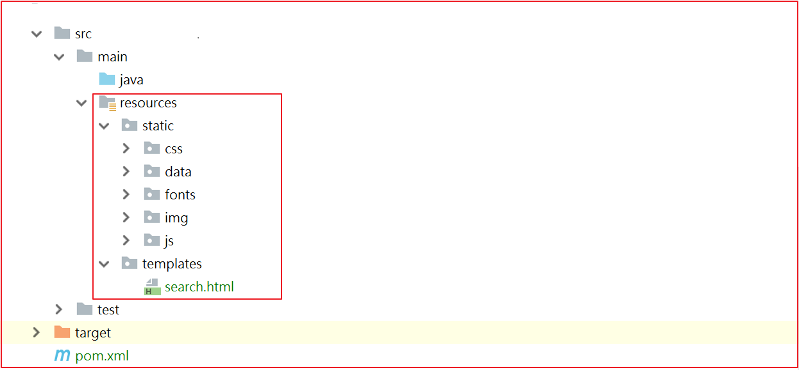

第8章 Thymeleaf
学习目标
- Thymeleaf的介绍
- Thymeleaf的入门
- Thymeleaf的语法及标签
- 搜索页面渲染
- 商品详情页静态化功能实现
1.Thymeleaf介绍
thymeleaf是一个XML/XHTML/HTML5模板引擎，可用于Web与非Web环境中的应用开发。它是一个开源的Java库，基于Apache License 2.0许可，由Daniel Fernández创建，该作者还是Java加密库Jasypt的作者。
Thymeleaf提供了一个用于整合Spring MVC的可选模块，在应用开发中，你可以使用Thymeleaf来完全代替JSP或其他模板引擎，如Velocity、FreeMarker等。Thymeleaf的主要目标在于提供一种可被浏览器正确显示的、格式良好的模板创建方式，因此也可以用作静态建模。你可以使用它创建经过验证的XML与HTML模板。相对于编写逻辑或代码，开发者只需将标签属性添加到模板中即可。接下来，这些标签属性就会在DOM（文档对象模型）上执行预先制定好的逻辑。
它的特点便是：开箱即用，Thymeleaf允许您处理六种模板，每种模板称为模板模式：
- XML
- 有效的XML
- XHTML
- 有效的XHTML
- HTML5
- 旧版HTML5
所有这些模式都指的是格式良好的XML文件，但Legacy HTML5模式除外，它允许您处理HTML5文件，其中包含独立（非关闭）标记，没有值的标记属性或不在引号之间写入的标记属性。为了在这种特定模式下处理文件，Thymeleaf将首先执行转换，将您的文件转换为格式良好的XML文件，这些文件仍然是完全有效的HTML5（实际上是创建HTML5代码的推荐方法）1。
另请注意，验证仅适用于XML和XHTML模板。
然而，这些并不是Thymeleaf可以处理的唯一模板类型，并且用户始终能够通过指定在此模式下解析模板的方法和编写结果的方式来定义他/她自己的模式。这样，任何可以建模为DOM树（无论是否为XML）的东西都可以被Thymeleaf有效地作为模板处理。
2.Springboot整合thymeleaf
使用springboot 来集成使用Thymeleaf可以大大减少单纯使用thymleaf的代码量，所以我们接下来使用springboot集成使用thymeleaf.
实现的步骤为：
- 创建一个sprinboot项目
- 添加thymeleaf的起步依赖
- 添加spring web的起步依赖
- 编写html 使用thymleaf的语法获取变量对应后台传递的值
- 编写controller 设置变量的值到model中
(1)创建工程
创建一个独立的工程springboot-thymeleaf,该工程为案例工程，不需要放到changgou工程中。
pom.xml依赖
x <project xmlns="http://maven.apache.org/POM/4.0.0" xmlns:xsi="http://www.w3.org/2001/XMLSchema-instance" xsi:schemaLocation="http://maven.apache.org/POM/4.0.0 http://maven.apache.org/xsd/maven-4.0.0.xsd"> <modelVersion>4.0.0</modelVersion> <groupId>com.itheima</groupId> <artifactId>springboot-thymeleaf</artifactId> <version>1.0-SNAPSHOT</version> <parent> <groupId>org.springframework.boot</groupId> <artifactId>spring-boot-starter-parent</artifactId> <version>2.1.4.RELEASE</version> </parent> <dependencies> <!--web起步依赖--> <dependency> <groupId>org.springframework.boot</groupId> <artifactId>spring-boot-starter-web</artifactId> </dependency> <!--thymeleaf配置--> <dependency> <groupId>org.springframework.boot</groupId> <artifactId>spring-boot-starter-thymeleaf</artifactId> </dependency> </dependencies></project>(2)创建包com.itheima.thymeleaf.并创建启动类ThymeleafApplication
xxxxxxxxxxpublic class ThymeleafApplication { public static void main(String[] args) { SpringApplication.run(ThymeleafApplication.class,args); }}
(3)创建application.yml
设置thymeleaf的缓存设置，设置为false。默认加缓存的，用于测试。
xxxxxxxxxxspring thymeleaf cachefalse
(4)控制层
创建controller用于测试后台 设置数据到model中。
创建com.itheima.controller.TestController，代码如下：
xxxxxxxxxx("/test")public class TestController { /*** * 访问/test/hello 跳转到demo1页面 * @param model * @return */ ("/hello") public String hello(Model model){ model.addAttribute("hello","hello welcome"); return "demo"; }}
(2)创建html
在resources中创建templates目录，在templates目录创建 demo.html,代码如下：
xxxxxxxxxx<html xmlns:th="http://www.thymeleaf.org"><head> <title>Thymeleaf的入门</title> <meta http-equiv="Content-Type" content="text/html; charset=UTF-8"/></head><body><!--输出hello数据--><p th:text="${hello}"></p></body></html>解释：
<html xmlns:th="http://www.thymeleaf.org">:这句声明使用thymeleaf标签
<p th:text="${hello}"></p>:这句使用 th:text="${变量名}" 表示 使用thymeleaf获取文本数据，类似于EL表达式。
(5)测试
启动系统，并在浏览器访问
xxxxxxxxxxhttp://localhost:8080/test/hello

3 Thymeleaf基本语法
(1)th:action
定义后台控制器路径，类似<form>标签的action属性。
例如：
xxxxxxxxxx<form th:action="@{/test/hello}" > <input th:type="text" th:name="id"> <button>提交</button></form>
(2)th:each
对象遍历，功能类似jstl中的<c:forEach>标签。
创建com.itheima.model.User,代码如下：
xxxxxxxxxxpublic class User { private Integer id; private String name; private String address; //..get..set}
Controller添加数据
xxxxxxxxxx/*** * 访问/test/hello 跳转到demo1页面 * @param model * @return */("/hello")public String hello(Model model){ model.addAttribute("hello","hello welcome"); //集合数据 List<User> users = new ArrayList<User>(); users.add(new User(1,"张三","深圳")); users.add(new User(2,"李四","北京")); users.add(new User(3,"王五","武汉")); model.addAttribute("users",users); return "demo1";}
页面输出
xxxxxxxxxx<table> <tr> <td>下标</td> <td>编号</td> <td>姓名</td> <td>住址</td> </tr> <tr th:each="user,userStat:${users}"> <td> 下标:<span th:text="${userStat.index}"></span>, </td> <td th:text="${user.id}"></td> <td th:text="${user.name}"></td> <td th:text="${user.address}"></td> </tr></table>
测试效果

(3)Map输出
后台添加Map
xxxxxxxxxx//Map定义Map<String,Object> dataMap = new HashMap<String,Object>();dataMap.put("No","123");dataMap.put("address","深圳");model.addAttribute("dataMap",dataMap);
页面输出
xxxxxxxxxx<div th:each="map,mapStat:${dataMap}"> <div th:text="${map}"></div> key:<span th:text="${mapStat.current.key}"></span><br/> value:<span th:text="${mapStat.current.value}"></span><br/> ==============================================</div>
测试效果

(4)数组输出
后台添加数组
xxxxxxxxxx//存储一个数组String[] names = {"张三","李四","王五"};model.addAttribute("names",names);页面输出
xxxxxxxxxx<div th:each="nm,nmStat:${names}"> <span th:text="${nmStat.count}"></span><span th:text="${nm}"></span> ==============================================</div>
测试效果

(5)Date输出
后台添加日期
xxxxxxxxxx//日期model.addAttribute("now",new Date());页面输出
xxxxxxxxxx<div> <span th:text="${#dates.format(now,'yyyy-MM-dd hh:ss:mm')}"></span></div>
测试效果

(6)th:if条件
后台添加年龄
xxxxxxxxxx//if条件model.addAttribute("age",22);
页面输出
xxxxxxxxxx<div> <span th:if="${(age>=18)}">终于长大了！</span></div>
测试效果

(7)th:fragment 定义一个模块
可以定义一个独立的模块，创建一个footer.html代码如下：
xxxxxxxxxx<html xmlns:th="http://www.thymeleaf.org"><head> <meta http-equiv="Content-Type" content="text/html;charset=charset=utf-8"> <title>fragment</title></head><body><div id="C" th:fragment="copy" > 关于我们<br/></div></body>
(8)th:include
可以直接引入th:fragment,在demo1.html中引入如下代码：
xxxxxxxxxx<div id="A" th:include="footer::copy"></div>
效果如下：

4 搜索页面渲染
4.1 搜索分析

搜索页面要显示的内容主要分为3块。
1)搜索的数据结果
2)筛选出的数据搜索条件
3)用户已经勾选的数据条件
4.2 搜索实现

搜索的业务流程如上图，用户每次搜索的时候，先经过搜索业务工程，搜索业务工程调用搜索微服务工程。
4.2.1 搜索工程搭建
(1)引入依赖
在changgou-service_search工程中的pom.xml中引入如下依赖：
xxxxxxxxxx<dependency> <groupId>org.springframework.boot</groupId> <artifactId>spring-boot-starter-thymeleaf</artifactId></dependency>
(2)静态资源导入
将资源中的页面资源/所有内容拷贝到工程的resources目录下如下图：

(3) 更改配置文件,在spring下添加内容
xxxxxxxxxxthymeleaf cachefalse
4.2.1 基础数据渲染
(1)更新SearchController,定义跳转搜索结果页面方法
代码如下：
xxxxxxxxxx //搜索页面 http://localhost:9009/search/list?keywords=手机&brand=三星&spec_颜色=粉色& //入参：Map //返回值 Map //由于页面是thymeleaf 完成的 属于服务器内页面渲染 跳转页面 ("/list") public String search( Map<String, String> searchMap, Model model) throws Exception { //特殊符号处理 handlerSearchMap(searchMap); //执行查询返回值 Map<String, Object> resultMap = searchService.search(searchMap); model.addAttribute("searchMap", searchMap); model.addAttribute("result", resultMap); return "search"; }}
(2) 搜索结果页面渲染
(2.1)用户选择条件回显
xxxxxxxxxx<div class="bread"> <ul class="fl sui-breadcrumb"> <li> <a href="#">全部结果</a> </li> <li class="active"> <span th:text="${searchMap.keywords}"></span> </li> </ul> <ul class="fl sui-tag"> <!-- 品牌--> <li class="with-x" th:if="${#maps.containsKey(searchMap,'brand')}"> 品牌:<span th:text="${searchMap.brand}"></span> <i>×</i> </li> <!-- 价格--> <li class="with-x" th:if="${#maps.containsKey(searchMap,'price')}"> 价格:<span th:text="${searchMap.price}"></span> <i>×</i> </li> <!-- 规格--> <li class="with-x" th:each="sm:${searchMap}" th:if="${#strings.startsWith(sm.key,'spec_')}"> <span th:text="${#strings.replace(sm.key,'spec_','')}"></span>:<span th:text="${#strings.replace(sm.value,'%2B','+')}"></span> <i>×</i> </li> </ul> <form class="fl sui-form form-dark"> <div class="input-control control-right"> <input type="text" /> <i class="sui-icon icon-touch-magnifier"></i> </div> </form> </div>
(2.2)商品属性及规格显示
更新搜索业务层实现
xxxxxxxxxx public Map<String, Set<String>> formartSpec(List<String> specList){ Map<String,Set<String>> resultMap = new HashMap<>(); if (specList!=null && specList.size()>0){ for (String specJsonString : specList) { //"{'颜色': '黑色', '尺码': '250度'}" //将获取到的json转换为map Map<String,String> specMap = JSON.parseObject(specJsonString, Map.class); for (String specKey : specMap.keySet()) { Set<String> specSet = resultMap.get(specKey); if (specSet == null){ specSet = new HashSet<String>(); } //将规格信息存入set中 specSet.add(specMap.get(specKey)); //将set存入map resultMap.put(specKey,specSet); } } } return resultMap; }更新页面
xxxxxxxxxx<div class="clearfix selector"> <div class="type-wrap logo" th:unless="${#maps.containsKey(searchMap,'brand')}"> <div class="fl key brand">品牌</div> <div class="value logos"> <ul class="logo-list"> <li th:each="brand,brandStat:${result.brandList}"> <a th:text="${brand}"></a> </li> </ul> </div> <div class="ext"> <a href="javascript:void(0);" class="sui-btn">多选</a> <a href="javascript:void(0);">更多</a> </div> </div> <div class="type-wrap" th:each="spec,specStat:${result.specList}" th:unless="${#maps.containsKey(searchMap,'spec_'+spec.key)}"> <div class="fl key" th:text="${spec.key}"></div> <div class="fl value"> <ul class="type-list"> <li th:each="op,opStat:${spec.value}"> <a th:text="${op}"></a> </li> </ul> </div> <div class="fl ext"></div> </div> <div class="type-wrap" th:unless="${#maps.containsKey(searchMap,'price')}"> <div class="fl key">价格</div> <div class="fl value"> <ul class="type-list"> <li> <a th:text="0-500元"></a> </li> <li> <a th:text="500-1000元"></a> </li> <li> <a th:text="1000-1500元"></a> </li> <li> <a th:text="1500-2000元"></a> </li> <li> <a th:text="2000-3000元"></a> </li> <li> <a th:text="3000元以上"></a> </li> </ul> </div> <div class="fl ext"> </div> </div> <div class="type-wrap"> <div class="fl key">更多筛选项</div> <div class="fl value"> <ul class="type-list"> <li> <a>特点</a> </li> <li> <a>系统</a> </li> <li> <a>手机内存 </a> </li> <li> <a>单卡双卡</a> </li> <li> <a>其他</a> </li> </ul> </div> <div class="fl ext"> </div> </div> </div>
(2.3)商品列表显示
xxxxxxxxxx<div class="goods-list"> <ul class="yui3-g"> <li class="yui3-u-1-5" th:each="sku,skuStat:${result.rows}"> <div class="list-wrap"> <div class="p-img"> <a href="item.html" target="_blank"><img src="/img/_/mobile01.png" /></a> </div> <div class="price"> <strong> <em>¥</em> <i th:text="${sku.price}"></i> </strong> </div> <div class="attr"> <a target="_blank" href="item.html" th:title="${sku.spec}" th:utext="${sku.name}">Apple苹果iPhone 6s (A1699)Apple苹果iPhone 6s (A1699)Apple苹果iPhone 6s (A1699)Apple苹果iPhone 6s (A1699)</a> </div> <div class="commit"> <i class="command">已有<span>2000</span>人评价</i> </div> <div class="operate"> <a href="success-cart.html" target="_blank" class="sui-btn btn-bordered btn-danger">加入购物车</a> <a href="javascript:void(0);" class="sui-btn btn-bordered">收藏</a> </div> </div> </li> </ul> </div>
4.3 关键字搜索
修改search.html
xxxxxxxxxx<form th:action="@{/search/list}" class="sui-form form-inline"> <!--searchAutoComplete--> <div class="input-append"> <input type="text" id="autocomplete" name="keywords" th:value="${searchMap.keywords}" class="input-error input-xxlarge" /> <button class="sui-btn btn-xlarge btn-danger" th:type="submit">搜索</button> </div></form>测试
搜索华为关键字,效果如下：

4.4 条件搜索实现

用户每次点击搜索的时候，其实在上次搜索的基础之上加上了新的搜索条件，也就是在上一次请求的URL后面追加了新的搜索条件，我们可以在后台每次拼接组装出上次搜索的URL，然后每次将URL存入到Model中，页面每次点击不同条件的时候，从Model中取出上次请求的URL，然后再加上新点击的条件参数实现跳转即可。
(1)后台记录搜索URL
修改SkuController，添加组装URL的方法，并将组装好的URL存储起来,代码如下：
xxxxxxxxxx //拼装url StringBuilder url = new StringBuilder("/search/list"); if (searchMap != null && searchMap.size()>0){ //是由查询条件 url.append("?"); for (String paramKey : searchMap.keySet()) { if (!"sortRule".equals(paramKey) && !"sortField".equals(paramKey) && !"pageNum".equals(paramKey)){ url.append(paramKey).append("=").append(searchMap.get(paramKey)).append("&"); } } //http://localhost:9009/search/list?keywords=手机&spec_网络制式=4G& String urlString = url.toString(); //去除路径上的最后一个& urlString=urlString.substring(0,urlString.length()-1); model.addAttribute("url",urlString); }else{ model.addAttribute("url",url); }
(2)页面搜索对接
xxxxxxxxxx<div class="clearfix selector"> <div class="type-wrap logo" th:unless="${#maps.containsKey(searchMap,'brand')}"> <div class="fl key brand">品牌</div> <div class="value logos"> <ul class="logo-list"> <li th:each="brand,brandSate:${result.brandList}"> <a th:text="${brand}" th:href="@{${url}(brand=${brand})}"></a> </li> </ul> </div> <div class="ext"> <a href="javascript:void(0);" class="sui-btn">多选</a> <a href="javascript:void(0);">更多</a> </div> </div> <div class="type-wrap" th:each="spec,specStat:${result.specList}" th:unless="${#maps.containsKey(searchMap,'spec_'+spec.key)}"> <div class="fl key" th:text="${spec.key}"> </div> <div class="fl value"> <ul class="type-list"> <li th:each="op,opstat:${spec.value}"> <a th:text="${op}" th:href="@{${url}('spec_'+${spec.key}=${op})}"></a> </li> </ul> </div> <div class="fl ext"></div> </div> <div class="type-wrap" th:unless="${#maps.containsKey(searchMap,'price')}"> <div class="fl key">价格</div> <div class="fl value"> <ul class="type-list"> <li> <a th:text="0-500元" th:href="@{${url}(price='0-500')}"></a> </li> <li> <a th:text="500-1000元" th:href="@{${url}(price='500-1000')}"></a> </li> <li> <a th:text="1000-1500元" th:href="@{${url}(price='1000-1500')}"></a> </li> <li> <a th:text="1500-2000元" th:href="@{${url}(price='1500-2000')}"></a> </li> <li> <a th:text="2000-3000元" th:href="@{${url}(price='2000-3000')}"></a> </li> <li> <a th:text="3000元以上" th:href="@{${url}(price='3000')}"></a> </li> </ul> </div> <div class="fl ext"> </div> </div> <div class="type-wrap"> <div class="fl key">更多筛选项</div> <div class="fl value"> <ul class="type-list"> <li> <a>特点</a> </li> <li> <a>系统</a> </li> <li> <a>手机内存 </a> </li> <li> <a>单卡双卡</a> </li> <li> <a>其他</a> </li> </ul> </div> <div class="fl ext"> </div> </div> </div>
4.5 移除搜索条件

如上图，用户点击条件搜索后，要将选中的条件显示出来，并提供移除条件的x按钮,显示条件我们可以从searchMap中获取，移除其实就是将之前的请求地址中的指定条件删除即可。
修改search.html，移除分类、品牌、价格、规格搜索条件，代码如下：
xxxxxxxxxx<ul class="fl sui-tag"> <li class="with-x" th:if="${#maps.containsKey(searchMap,'brand')}"> 品牌:<span th:text="${searchMap.brand}"></span> <a th:href="@{${#strings.replace(url,'&brand='+searchMap.brand,'')}}">×</a> </li> <li class="with-x" th:if="${#maps.containsKey(searchMap,'price')}"> 价格:<span th:text="${searchMap.price}"></span> <a th:href="@{${#strings.replace(url,'&price='+searchMap.price,'')}}">×</a> </li> <!--规格--> <li class="with-x" th:each="sm:${searchMap}" th:if="${#strings.startsWith(sm.key,'spec_')}"> <span th:text="${#strings.replace(sm.key,'spec_','')}"></span> : <span th:text="${#strings.replace(sm.value,'%2B','+')}"></span> <a th:href="@{${#strings.replace(url,'&'+sm.key+'='+sm.value,'')}}">×</a> </li> </ul>
4.6 排序
修改search.html，实现排序，代码如下：
xxxxxxxxxx<li> <a th:href="@{${url}(sortRule='ASC',sortField='price')}">价格↑</a></li><li> <a th:href="@{${url}(sortRule='DESC',sortField='price')}">价格↓</a></li>
4.7 分页
真实的分页应该像百度那样，如下图：


(1)分页工具类定义
在comm工程中添加Page分页对象，代码如下：
xxxxxxxxxxpackage com.changgou.entity;import java.io.Serializable;import java.util.List;/** * 分页对象 * @param <T> */public class Page <T> implements Serializable{ //当前默认为第一页 public static final Integer pageNum = 1; //默认每页显示条件 public static final Integer pageSize = 20; //判断当前页是否为空或是小于1 public static Integer cpn(Integer pageNum){ if(null == pageNum || pageNum < 1){ pageNum = 1; } return pageNum; } // 页数（第几页） private long currentpage; // 查询数据库里面对应的数据有多少条 private long total;// 从数据库查处的总记录数 // 每页查5条 private int size; // 下页 private int next; private List<T> list; // 最后一页 private int last; private int lpage; private int rpage; //从哪条开始查 private long start; //全局偏移量 public int offsize = 2; public Page() { super(); } /**** * * @param currentpage * @param total * @param pagesize */ public void setCurrentpage(long currentpage,long total,long pagesize) { //可以整除的情况下 long pagecount = total/pagesize; //如果整除表示正好分N页，如果不能整除在N页的基础上+1页 int totalPages = (int) (total%pagesize==0? total/pagesize : (total/pagesize)+1); //总页数 this.last = totalPages; //判断当前页是否越界,如果越界，我们就查最后一页 if(currentpage>totalPages){ this.currentpage = totalPages; }else{ this.currentpage=currentpage; } //计算start this.start = (this.currentpage-1)*pagesize; } //上一页 public long getUpper() { return currentpage>1? currentpage-1: currentpage; } //总共有多少页，即末页 public void setLast(int last) { this.last = (int) (total%size==0? total/size : (total/size)+1); } /**** * 带有偏移量设置的分页 * @param total * @param currentpage * @param pagesize * @param offsize */ public Page(long total,int currentpage,int pagesize,int offsize) { this.offsize = offsize; initPage(total, currentpage, pagesize); } /**** * * @param total 总记录数 * @param currentpage 当前页 * @param pagesize 每页显示多少条 */ public Page(long total,int currentpage,int pagesize) { initPage(total,currentpage,pagesize); } /**** * 初始化分页 * @param total * @param currentpage * @param pagesize */ public void initPage(long total,int currentpage,int pagesize){ //总记录数 this.total = total; //每页显示多少条 this.size=pagesize; //计算当前页和数据库查询起始值以及总页数 setCurrentpage(currentpage, total, pagesize); //分页计算 int leftcount =this.offsize, //需要向上一页执行多少次 rightcount =this.offsize; //起点页 this.lpage =currentpage; //结束页 this.rpage =currentpage; //2点判断 this.lpage = currentpage-leftcount; //正常情况下的起点 this.rpage = currentpage+rightcount; //正常情况下的终点 //页差=总页数和结束页的差 int topdiv = this.last-rpage; //判断是否大于最大页数 /*** * 起点页 * 1、页差<0 起点页=起点页+页差值 * 2、页差>=0 起点和终点判断 */ this.lpage=topdiv<0? this.lpage+topdiv:this.lpage; /*** * 结束页 * 1、起点页<=0 结束页=|起点页|+1 * 2、起点页>0 结束页 */ this.rpage=this.lpage<=0? this.rpage+(this.lpage*-1)+1: this.rpage; /*** * 当起点页<=0 让起点页为第一页 * 否则不管 */ this.lpage=this.lpage<=0? 1:this.lpage; /*** * 如果结束页>总页数 结束页=总页数 * 否则不管 */ this.rpage=this.rpage>last? this.last:this.rpage; } public long getNext() { return currentpage<last? currentpage+1: last; } public void setNext(int next) { this.next = next; } public long getCurrentpage() { return currentpage; } public long getTotal() { return total; } public void setTotal(long total) { this.total = total; } public long getSize() { return size; } public void setSize(int size) { this.size = size; } public long getLast() { return last; } public long getLpage() { return lpage; } public void setLpage(int lpage) { this.lpage = lpage; } public long getRpage() { return rpage; } public void setRpage(int rpage) { this.rpage = rpage; } public long getStart() { return start; } public void setStart(long start) { this.start = start; } public void setCurrentpage(long currentpage) { this.currentpage = currentpage; } /** * @return the list */ public List<T> getList() { return list; } /** * @param list the list to set */ public void setList(List<T> list) { this.list = list; } public static void main(String[] args) { //总记录数 //当前页 //每页显示多少条 int cpage =17; Page page = new Page(1001,cpage,50,7); System.out.println("开始页:"+page.getLpage()+"__当前页："+page.getCurrentpage()+"__结束页"+page.getRpage()+"____总页数："+page.getLast()); }}
(2)分页实现
修改SkuController,实现分页信息封装，代码如下：

(3)页面分页实现
修改search.html，实现分页查询，代码如下：

5.畅购商品详情页
5.1 需求分析
当系统审核完成商品，需要将商品详情页进行展示，那么采用静态页面生成的方式生成，并部署到高性能的web服务器中进行访问是比较合适的。所以，开发流程如下图所示：

此处MQ我们使用Rabbitmq即可。
执行步骤解释：
- 系统管理员（商家运维人员）修改或者审核商品的时候, 会更改数据库中商品上架状态并发送商品id给rabbitMq中的上架交换器
- 上架交换器会将商品id发给静态页生成队列
- 静态页微服务设置监听器, 监听静态页生成队列, 根据商品id获取商品详细数据并使用thymeleaf的模板技术生成静态页
5.2 商品静态化微服务创建
5.2.1 需求分析
该微服务只用于生成商品静态页，不做其他事情。
5.2.2 搭建项目
（1）在changgou-service下创建一个名称为changgou_service_page的项目,作为静态化页面生成服务
（2）changgou-service-page中添加起步依赖，如下
xxxxxxxxxx<dependencies> <dependency> <groupId>com.changgou</groupId> <artifactId>changgou_common</artifactId> <version>1.0-SNAPSHOT</version> </dependency> <dependency> <groupId>org.springframework.boot</groupId> <artifactId>spring-boot-starter-thymeleaf</artifactId> </dependency> <dependency> <groupId>org.springframework.boot</groupId> <artifactId>spring-boot-starter-amqp</artifactId> </dependency> <dependency> <groupId>com.changgou</groupId> <artifactId>changgou_service_goods_api</artifactId> <version>1.0-SNAPSHOT</version> </dependency></dependencies>
（3）修改application.yml的配置
xxxxxxxxxxserver port9011spring application namepage rabbitmq host192.168.200.128 main allow-bean-definition-overridingtrue #当遇到同样名字的时候，是否允许覆盖注册eureka client service-url defaultZonehttp//127.0.0.16868/eureka instance prefer-ip-addresstruefeign hystrix enabledfalse client config default#配置全局的feign的调用超时时间 如果 有指定的服务配置 默认的配置不会生效 connectTimeout600000 # 指定的是 消费者 连接服务提供者的连接超时时间 是否能连接 单位是毫秒 readTimeout600000 # 指定的是调用服务提供者的 服务 的超时时间（） 单位是毫秒#hystrix 配置hystrix command default execution timeout #如果enabled设置为false，则请求超时交给ribbon控制 enabledtrue isolation strategySEMAPHORE# 生成静态页的位置pagepathD\items（4）创建系统启动类
xxxxxxxxxx(basePackages = "com.changgou.goods.feign")public class PageApplication { public static void main(String[] args) { SpringApplication.run(PageApplication.class); }}
5.3 生成静态页
5.3.1 需求分析
页面发送请求，传递要生成的静态页的商品的SpuID.后台controller 接收请求，调用thyemleaf的原生API生成商品静态页。

上图是要生成的商品详情页，从图片上可以看出需要查询SPU的3个分类作为面包屑显示，同时还需要查询SKU和SPU信息。
5.3.2 Feign创建
一会儿需要查询SPU和SKU以及Category，所以我们需要先创建Feign，修改changgou-service-goods-api,添加CategoryFeign，并在CategoryFeign中添加根据ID查询分类数据，代码如下：
xxxxxxxxxx(name = "goods")public interface CategoryFeign { ("/category/{id}") public Result<Category> findById(("id") Integer id);}
在changgou-service-goods-api,添加SkuFeign,并添加根据SpuID查询Sku集合，代码如下：
xxxxxxxxxx(name = "goods")public interface SkuFeign { ("/sku/spu/{spuId}") public List<Sku> findSkuListBySpuId(("spuId") String spuId);}
在changgou-service-goods-api,添加SpuFeign,并添加根据SpuID查询Spu信息，代码如下：
xxxxxxxxxx(name = "goods")public interface SpuFeign { ("/spu/findSpuById/{id}") public Result<Spu> findSpuById(("id") String id);}
5.3.3 静态页生成代码
(1)创建PageService
xxxxxxxxxxpublic interface PageService { /** * 生成静态化页面 * @param spuId */ void generateItemPage(String spuId);}
(2)创建PageServiceImpl
xxxxxxxxxxpublic class PageServiceImpl implements PageService { private SpuFeign spuFeign; private CategoryFeign categoryFeign; private SkuFeign skuFeign; ("${pagepath}") private String pagepath; private TemplateEngine templateEngine; public void generateItemPage(String spuId) { //获取context对象,用于存放商品详情数据 Context context = new Context(); Map<String, Object> itemData = this.findItemData(spuId); context.setVariables(itemData); //获取商品详情页生成的指定位置 File dir = new File(pagepath); //判断商品详情页文件夹是否存在,不存在则创建 if (!dir.exists()){ dir.mkdirs(); } //定义输出流,进行文件生成 File file = new File(dir+"/"+spuId+".html"); Writer out = null; try{ out = new PrintWriter(file); //生成文件 /** * 1.模板名称 * 2.context对象,包含了模板需要的数据 * 3.输出流,指定文件输出位置 */ templateEngine.process("item",context,out); }catch (Exception e){ e.printStackTrace(); }finally { //关闭流 try { out.close(); } catch (IOException e) { e.printStackTrace(); } } } //获取静态化页面数据 private Map<String, Object> findItemData(String spuId) { Map<String,Object> resultMap = new HashMap<>(); //获取spu信息 Result<Spu> spuResult = spuFeign.findSpuById(spuId); Spu spu = spuResult.getData(); resultMap.put("spu",spu); //获取图片信息 if (spu != null){ if(!StringUtils.isEmpty(spu.getImages())){ resultMap.put("imageList",spu.getImages().split(",")); } } //获取分类信息 Category category1 = categoryFeign.findById(spu.getCategory1Id()).getData(); resultMap.put("category1",category1); Category category2 = categoryFeign.findById(spu.getCategory2Id()).getData(); resultMap.put("category2",category2); Category category3 = categoryFeign.findById(spu.getCategory3Id()).getData(); resultMap.put("category3",category3); //获取sku集合信息 List<Sku> skuList = skuFeign.findSkuListBySpuId(spuId); resultMap.put("skuList",skuList); resultMap.put("specificationList",JSON.parseObject(spu.getSpecItems(), Map.class)); return resultMap; }}
(3)声明page_create_queue队列,并绑定到商品上架交换机
xxxxxxxxxxpublic class RabbitMQConfig { //定义交换机名称 public static final String GOODS_UP_EXCHANGE="goods_up_exchange"; public static final String GOODS_DOWN_EXCHANGE="goods_down_exchange"; //定义队列名称 public static final String AD_UPDATE_QUEUE="ad_update_queue"; public static final String SEARCH_ADD_QUEUE="search_add_queue"; public static final String SEARCH_DEL_QUEUE="search_del_queue"; public static final String PAGE_CREATE_QUEUE="page_create_queue"; //声明队列 public Queue queue(){ return new Queue(AD_UPDATE_QUEUE); } (SEARCH_ADD_QUEUE) public Queue SEARCH_ADD_QUEUE(){ return new Queue(SEARCH_ADD_QUEUE); } (SEARCH_DEL_QUEUE) public Queue SEARCH_DEL_QUEUE(){ return new Queue(SEARCH_DEL_QUEUE); } (PAGE_CREATE_QUEUE) public Queue PAGE_CREATE_QUEUE(){ return new Queue(PAGE_CREATE_QUEUE); } //声明交换机 (GOODS_UP_EXCHANGE) public Exchange GOODS_UP_EXCHANGE(){ return ExchangeBuilder.fanoutExchange(GOODS_UP_EXCHANGE).durable(true).build(); } (GOODS_DOWN_EXCHANGE) public Exchange GOODS_DOWN_EXCHANGE(){ return ExchangeBuilder.fanoutExchange(GOODS_DOWN_EXCHANGE).durable(true).build(); } //队列与交换机的绑定 public Binding GOODS_UP_EXCHANGE_BINDING((SEARCH_ADD_QUEUE)Queue queue,(GOODS_UP_EXCHANGE)Exchange exchange){ return BindingBuilder.bind(queue).to(exchange).with("").noargs(); } public Binding PAGE_CREATE_QUEUE_BINDING((PAGE_CREATE_QUEUE)Queue queue,(GOODS_UP_EXCHANGE)Exchange exchange){ return BindingBuilder.bind(queue).to(exchange).with("").noargs(); } public Binding GOODS_DOWN_EXCHANGE_BINDING((SEARCH_DEL_QUEUE)Queue queue,(GOODS_DOWN_EXCHANGE)Exchange exchange){ return BindingBuilder.bind(queue).to(exchange).with("").noargs(); }}
(4)创建PageListener监听类,监听page_create_queue队列,获取消息,并生成静态化页面
xxxxxxxxxxpublic class PageListener { private PageService pageService; (queues = RabbitMQConfig.PAGE_CREATE_QUEUE) public void receiveMessage(String spuId){ System.out.println("生成商品详情页面,商品id为: "+spuId); //生成静态化页面 pageService.generateItemPage(spuId); }}
(5)更新canal中消息队列配置类与Page服务一致
(6)更新canal中对于spu表的监听类,当商品审核状态从0变1,则将当前spuId发送到消息队列
xxxxxxxxxx//获取最新审核商品if ("0".equals(oldData.get("status")) && "1".equals(newData.get("status"))){ //发送商品spuId rabbitTemplate.convertAndSend(RabbitMQConfig.GOODS_UP_EXCHANGE,"",newData.get("id"));}
5.3.4 模板填充
(1)面包屑数据
修改item.html，填充三个分类数据作为面包屑，代码如下：

(2)商品图片
修改item.html，将商品图片信息输出，在真实工作中需要做空判断，代码如下：

(3)规格输出

(4)默认SKU显示
静态页生成后，需要显示默认的Sku，我们这里默认显示第1个Sku即可，这里可以结合着Vue一起实现。可以先定义一个集合，再定义一个spec和sku，用来存储当前选中的Sku信息和Sku的规格，代码如下：

页面显示默认的Sku信息

(5)记录选中的Sku
在当前Spu的所有Sku中spec值是唯一的，我们可以根据spec来判断用户选中的是哪个Sku，我们可以在Vue中添加代码来实现，代码如下：

添加规格点击事件

(6)样式切换
点击不同规格后，实现样式选中，我们可以根据每个规格判断该规格是否在当前选中的Sku规格中，如果在，则返回true添加selected样式，否则返回false不添加selected样式。
Vue添加代码：

页面添加样式绑定，代码如下：

5.3.5 启动测试
启动eurekea服务端,数据监控服务,商品服务,静态页生成服务. 将spu表中status字段从0更新为1.

5.3.6 基于nginx完成静态页访问
生成的静态页我们可以先放到changgou-service-page工程中，后面项目实战的时候可以挪出来放到Nginx指定发布目录。一会儿我们将生成的静态页放到resources/templates/items目录下,所以请求该目录下的静态页需要直接到该目录查找即可。